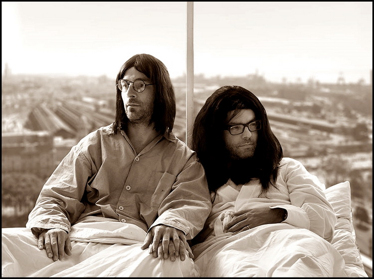
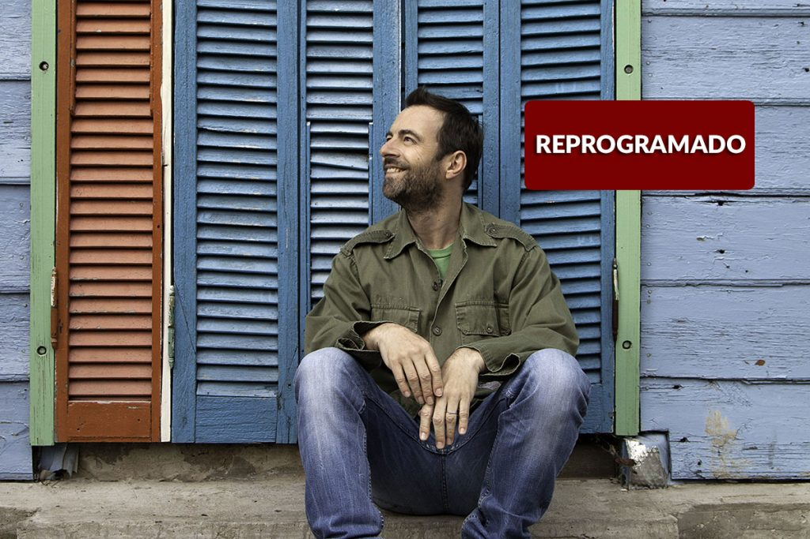
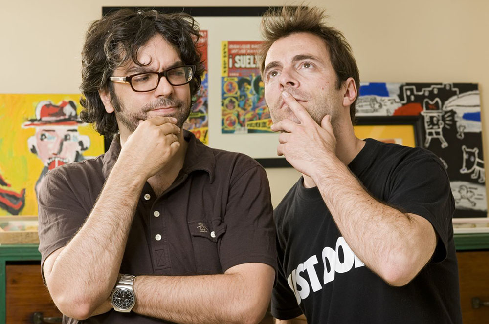

cantante argentino nacido en Estados Unidos. Se caracteriza por un sonido particular que mezcla la música popular de su país y la de Latinoamérica con el rock alternativo y el pop estadounidense, fusionándolos en un estilo que el mismo cantante y compositor ha llamado "Des-Generado"
polifacético
músico y compositor
- 
- 
- 